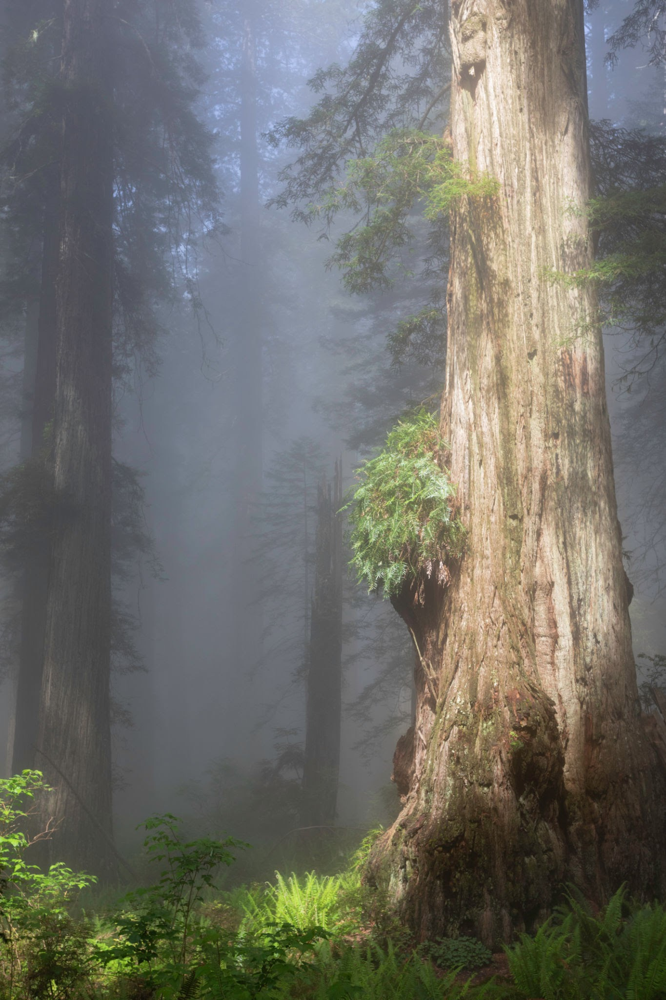
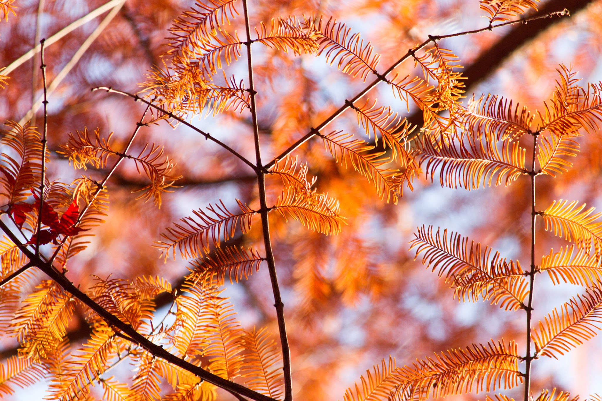

The coastal redwood forests of California are some of the most awe-inspiring environments on Earth. Gazing up at these towering giants, it is easy to assume they are invincible. Yet, despite their absolute dominance where they grow, their natural range is restricted to a seemingly random, narrow chain of mountains on the Pacific coast.
To understand why these trees only grow in such isolated pockets today, we have to look back millions of years to a time when they dominated the entire planet.

The Age of Giants
The evolutionary history of the redwood family begins roughly 200 million years ago, when Earth's landmasses were fused into the supercontinent Pangea. It was here that primitive cypress trees—the earliest ancestors of redwoods—first evolved and spread across the globe.
Fast forward 100 million years, and Pangea had fractured into two major continents: Gondwana in the south, which became a sweltering desert, and Laurasia in the north. Laurasia experienced cooler, wetter conditions, causing a persistent fog to blanket much of the continent. Under these humid conditions, a unique lineage of the cypress family emerged: Sequoioideae.
The Physics of Unlimited Height
To survive, the Sequoioideae lineage made a radical evolutionary trade-off. They sacrificed extensive root development in exchange for the ability to absorb water directly from the thick, airborne fog. Millions of years ago, when the air was heavily saturated, this was a highly rewarding strategy.
This airborne water delivery is precisely what allowed redwoods to become the tallest living things on Earth. For most trees, height is strictly limited by capillary action—the physical maximum height that water can be pulled up from the roots against gravity. By bypassing the roots and drinking directly from the sky, sequoias were no longer constrained by this physical limit.
The Great Climate Shift
If sequoias were so perfectly adapted, why did they disappear from the rest of the world? Starting 35 million years ago, the planet entered its most recent ice age, triggering two catastrophic changes for the redwood family:
- The encroaching freeze: Redwoods cannot tolerate deep, prolonged freezes. As glaciers expanded from the poles, the redwoods' habitable zone shrank.
- The loss of humidity: Colder air holds significantly less moisture than warm air. As global temperatures dropped, the planet's atmospheric humidity plummeted.
The California Sanctuary
They survived in California due to a geographic anomaly. First, massive glaciers never reached as far south as the California coast. Second, the Pacific Ocean continuously drives cold water currents down from Alaska. When this cold water meets the warm desert air of the California coast, it forces moisture to precipitate out as a dense, seasonal fog.
This localized fog belt perfectly replicates the ancient, humid conditions of Laurasia, allowing the Coastal Redwood to survive on the coast, while its cousin, the Giant Sequoia, found a similar microclimate high in the Sierra Nevada mountains.

The Asian Survivor: The Dawn Redwood
In 1939, a Chinese botanist named Kan Duo stumbled upon a peculiar tree growing at the base of a village shrine in China's Sichuan province. Locals called it the "water fir." Eventually, botanists connected the dots: the living tree in China was the exact same species as an ancient fossil unearthed in Japan.
The Dawn Redwood had survived as a tiny relict population in a single Chinese valley. To survive the drier, modern climate, it became deciduous (dropping its needles in winter to conserve water) and semi-aquatic, growing in floodplains with constant access to groundwater.
Key insight: All three of these remaining populations were nearly driven to complete extinction by human logging in the 19th and 20th centuries before massive conservation efforts protected them.